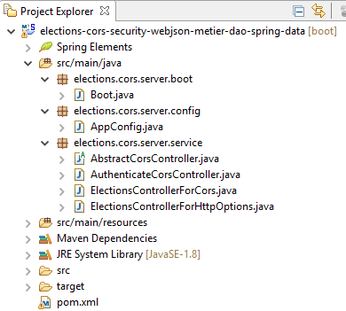
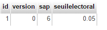
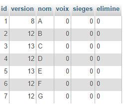
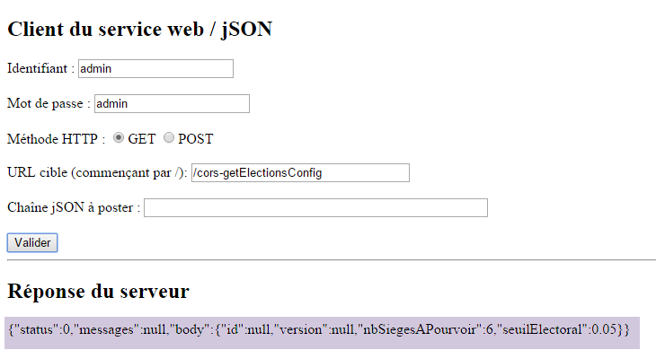
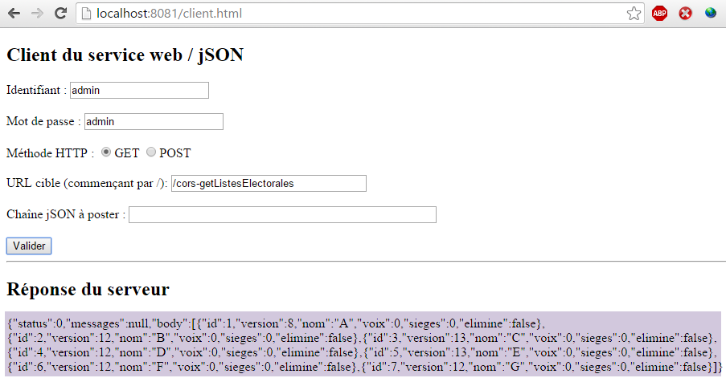
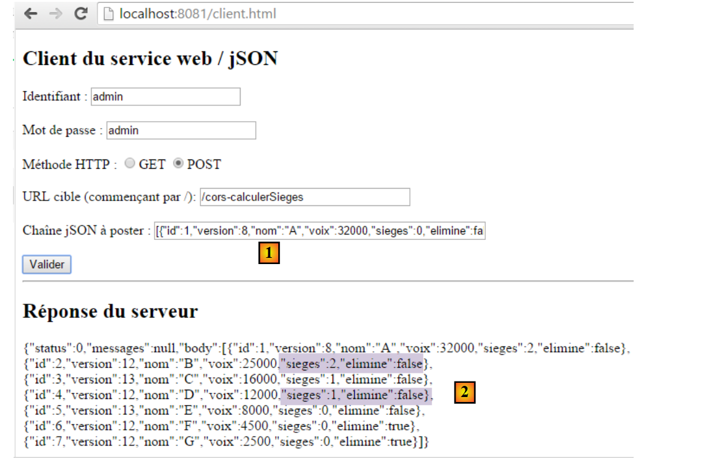
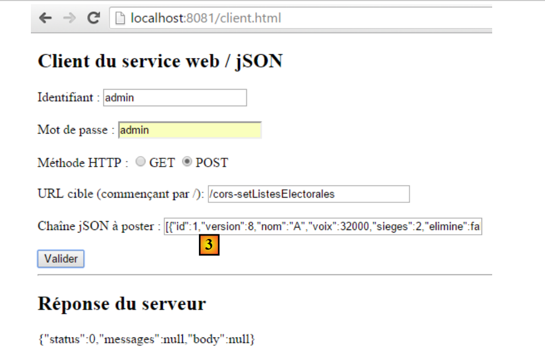
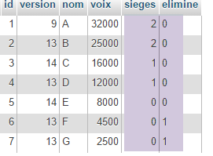

19. [TD] مشاركة الموارد عبر الأصول (CORS)
الكلمات المفتاحية: CORS (مشاركة الموارد عبر الأصول).
هنا، سننشئ مشروعًا جديدًا حتى تقبل خدمة الويب الخاصة بالانتخابات الآمنة الطلبات عبر النطاقات.
مشروع Eclipse هو كما يلي:
 |
المهمة: اتبع الخطوات الموضحة في القسم 18.9 لإنشاء هذا المشروع.
بمجرد إنشاء هذا المشروع، إليك ما يمكنك فعله باستخدام عميل HTML الموصوف في القسم 18.2. في بداية الطلبات، تكون قاعدة بيانات [dbelections] كما يلي:
 |  |
 |
 |
 |
في [1]، تكون قيمة JSON المنشورة كما يلي:
[{"id":1,"version":8,"nom":"A","voix":32000,"sieges":0,"elimine":false},{"id":2,"version":12,"nom":"B","voix":25000,"sieges":0,"elimine":false},{"id":3,"version":13,"nom":"C","voix":16000,"sieges":0,"elimine":false},{"id":4,"version":12,"nom":"D","voix":12000,"sieges":0,"elimine":false},{"id":5,"version":13,"nom":"E","voix":8000,"sieges":0,"elimine":false},{"id":6,"version":12,"nom":"F","voix":4500,"sieges":0,"elimine":false},{"id":7,"version":12,"nom":"G","voix":2500,"sieges":0,"elimine":false}]
في [2]، تم حساب حقول [seats] و [eliminated]. ننسخ حقل [body] من [2] إلى [3] أدناه:
 |
تصبح قاعدة بيانات [dbelections] كما يلي:
 |